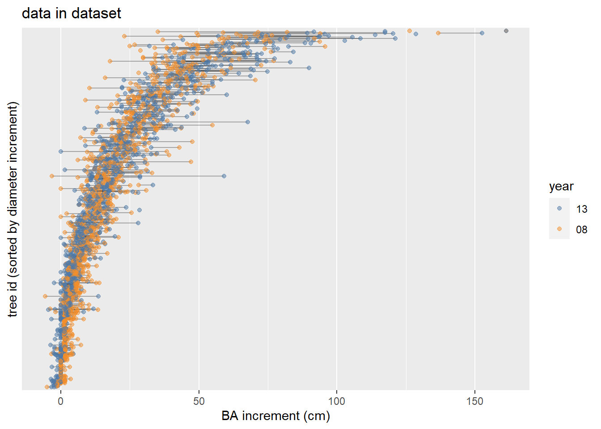

Modeling BA increment
library(lme4)
palette("Tableau 10")
library(patchwork)Introduction
Basal area increment is a key feature for analysis. Dbh data is available for almost all trees in both periods, it is more precise and diameter growth (as opposed to height growth) is expected to have a strong response to thinning treatments.
Define trees of interest
For basal area increment, I will include all live trees without broken or dead tops. I am including trees identified as leaning, these should mostly have good growth and accurate measurements. I am excluding bear damaged trees.
test_d <- d_l %>%
# calculate SDI for each plot (additive method)
group_by(plot) %>%
mutate(sdi_plot = sum(12.5 * (dbh / 25.4)^1.605, na.rm = TRUE)) %>%
ungroup() %>%
# only use unbroken live sese or psme from 2018
filter(
spp %in% c("SESE3", "PSMEM"),
year %in% c("18", "13"),
status == 1,
!get_cond(2, 3),
!is.na(dbh)
) %>%
mutate(
treat_method = str_extract(treatment, "C|H|L"),
treat_density = str_extract(treatment, "C|40|80"),
treat_status = if_else(str_detect(treatment, "C"), "unthinned", "thinned"),
year = factor(year, levels = c("13", "18"), ordered = FALSE)
) %>%
mutate(year = factor(year, ordered = FALSE)) %>%
select(-c(h_dist, azi, status, rot, cc, x, y, live))
# Remove bear damaged trees
test_d_bear <- test_d
test_d <- test_d[test_d$bear == FALSE, ]
# Alter one outlier record by using data from previous year
big_tree <- "4H80.4019"
replacement_data <- filter(test_d, tree_id == big_tree, year == "13") %>%
mutate(
dbh = dbh + d_inc * 5,
d_inc = d_inc,
ba = ba + ba_inc * 5,
ba_inc = ba_inc
)
bad_rec <- with(test_d, which(tree_id == big_tree & year == "18"))
test_d[bad_rec, names(replacement_data)] <- replacement_data
display_vars <- function(x) {
select(x, c(tree_id, year, dbh, ht, bear, cr, notes, cond, d_inc, ba_inc))
}Number of redwoods and Douglas fir trees in each plot and each treatment. Not including bear damaged trees.
test_d %>%
group_by(plot) %>%
filter(year == "18") %>%
mutate(n_sese = sum(spp == "SESE3")) %>%
ggplot(aes(fct_reorder(plot, n_sese))) +
geom_bar(aes(fill = spp)) +
geom_text(
aes(label = after_stat(count), group = spp),
stat = "count",
position = position_stack(vjust = .5)
) +
scale_fill_manual(values = palette())
test_d %>%
group_by(treatment) %>%
filter(year == "18") %>%
mutate(n_sese = sum(spp == "SESE3")) %>%
ggplot(aes(fct_reorder(treatment, n_sese))) +
geom_bar(aes(fill = spp)) +
geom_text(
aes(label = after_stat(count),
group = spp),
stat = "count",
position = position_stack(vjust = .5)
) +
scale_fill_manual(values = palette())
Data exploration
Outliers
Here I’m looking for any outliers in basal area increment, or extreme changes. There are definitely basal area outliers some of the most extreme can be explained by having bear damage, but on average, bear-damaged trees have diameter increments almost double those of non-bear-damaged. It is unclear whether this is due to loose bark, or the fact that these trees tend to be faster growing. This question might need further investigation. Following Dagley et. al 2018, I will remove bear damaged trees from analysis. Another option could be including bear damage as a covariate.
# outliers defined as 1.5 times above or below IQR
test_d %>%
filter(
out(ba_inc)
) %>%
group_by(tree_id) %>%
arrange(ba_inc) %>%
display_vars %>%
color_groups()| tree_id | year | dbh | ht | bear | cr | notes | cond | d_inc | ba_inc |
|---|---|---|---|---|---|---|---|---|---|
| C1.4180 | 18 | 52.324 | 28.34502 | FALSE | NA | NA | 0.9144 | 71.87139 | |
| C1.4179 | 13 | 50.292 | 26.82109 | FALSE | 30 | NA | 0.9652 | 72.59091 | |
| C1.4169 | 13 | 58.928 | 26.82109 | FALSE | 30 | BD grown over | 0.8128 | 72.64158 | |
| 1L40.3664 | 18 | 44.196 | NA | FALSE | NA | NA | 4,22 | 1.1176 | 72.68212 |
| 1H80.3574 | 18 | 41.148 | 30.17373 | FALSE | NA | NA | 22 | 1.2192 | 72.96588 |
| 3L40.3212 | 13 | 44.704 | 28.64980 | FALSE | 30 | flagged from raking; frass | 1.1176 | 73.57393 | |
| 1H40.3029 | 13 | 46.736 | 29.56416 | FALSE | 35 | illegible note | 22 | 1.0668 | 73.84755 |
| 1L40.3670 | 13 | 43.180 | 27.43066 | FALSE | 30 | NA | 22 | 1.1684 | 73.88808 |
| 3H40.1856 | 18 | 40.386 | 27.73545 | FALSE | 35 | NA | 1.2700 | 74.23265 | |
| 1L40.3662 | 18 | 46.990 | NA | FALSE | NA | NA | 22 | 1.0668 | 74.27318 |
| 3H40.1860 | 13 | 41.910 | 22.85888 | FALSE | 35 | NA | 1.2192 | 74.42519 | |
| 1L40.3679 | 13 | 43.688 | 28.04023 | FALSE | 25 | frass | 22 | 1.1684 | 74.82043 |
| 2L40.3485 | 18 | 37.084 | 29.56416 | FALSE | NA | NA | 22 | 1.4224 | 74.91163 |
| 1H80.3528 | 18 | 43.942 | 31.69765 | FALSE | 25 | NA | 1.1684 | 75.28660 | |
| 1L80.3405 | 13 | 45.720 | 27.73545 | FALSE | 25 | NA | 1.1176 | 75.35754 | |
| 2L40.3510 | 13 | 39.878 | 26.82109 | FALSE | 25 | FRASS | 1.3208 | 75.88451 | |
| 4H40.3957 | 13 | 40.132 | 28.64980 | FALSE | 30 | FRASS | 4 | 1.3208 | 76.41149 |
| 1L40.3670 | 18 | 48.514 | NA | FALSE | NA | NA | 22 | 1.0668 | 76.82699 |
| 1L80.3405 | 18 | 50.800 | NA | FALSE | NA | NA | 1.0160 | 77.01954 | |
| 2H40.3043 | 13 | 44.958 | 26.51631 | FALSE | 25 | NA | 4 | 1.1684 | 77.15128 |
| C4.4700 | 18 | 44.958 | 30.17373 | FALSE | 25 | may be alive? | 1.1684 | 77.15128 | |
| C3.4446 | 18 | 51.054 | NA | FALSE | NA | NA | 1.0160 | 77.42490 | |
| 1H40.3029 | 18 | 51.816 | 32.30722 | FALSE | NA | NA | 22 | 1.0160 | 78.64100 |
| 1L80.3389 | 13 | 45.974 | 27.12588 | FALSE | 30 | NA | 1 | 1.1684 | 79.01596 |
| 4H40.3956 | 18 | 42.926 | 29.25937 | FALSE | NA | NA | 4 | 1.2700 | 79.29972 |
| 4H40.3926 | 13 | 44.704 | 25.29717 | FALSE | 20 | BD healed over | 1.2192 | 79.77603 | |
| 3H40.1875 | 13 | 49.022 | 27.43066 | FALSE | 25 | frass | 1 | 1.1176 | 81.15427 |
| 3L80.3380 | 18 | 42.672 | 29.86894 | FALSE | NA | NA | 1.3208 | 81.68125 | |
| 2L80.3728 | 13 | 39.116 | 24.38281 | FALSE | 25 | NA | 1.4732 | 81.99540 | |
| 4L80.1932 | 18 | 59.690 | 32.61201 | FALSE | 25 | NA | 4 | 0.9144 | 82.45144 |
| 4H40.3957 | 18 | 46.228 | NA | FALSE | NA | NA | 4 | 1.2192 | 82.69466 |
| 3H40.3200 | 18 | 46.482 | NA | FALSE | NA | NA | 1,4 | 1.2192 | 83.18110 |
| 2H80.3159 | 13 | 50.292 | 26.82109 | FALSE | 25 | old bear damage | 1.1176 | 83.38378 | |
| 2L80.3745 | 18 | 47.498 | 31.69765 | FALSE | 25 | NA | 1 | 1.2700 | 88.42046 |
| 3H40.1859 | 18 | 38.100 | 21.00000 | FALSE | 25 | NA | 1.6764 | 89.29199 | |
| 1L40.3679 | 18 | 49.784 | NA | FALSE | NA | NA | 22 | 1.2192 | 89.50481 |
| 2H80.3149 | 13 | 53.848 | 26.51631 | FALSE | 25 | NA | 1.1176 | 89.62642 | |
| C1.4209 | 18 | 61.722 | 27.73545 | FALSE | NA | NA | 1,4,6 | 0.9652 | 89.92031 |
| 2H40.3081 | 18 | 54.356 | 29.56416 | FALSE | NA | NA | 1.1176 | 90.51822 | |
| 3L40.3212 | 18 | 50.800 | NA | FALSE | NA | NA | 1.2192 | 91.45057 | |
| 3L40.3231 | 18 | 33.782 | 19.20146 | FALSE | 30 | NA | 2.0320 | 91.61271 | |
| 4L40.3247 | 13 | 55.118 | 29.86894 | FALSE | 40 | frass | 1.1176 | 91.85593 | |
| 2H40.3070 | 13 | 43.688 | 27.73545 | FALSE | 30 | bear damage healed over | 1.4732 | 92.57546 | |
| 2H40.3036 | 18 | 40.640 | 23.16367 | FALSE | NA | NA | 4,7 | 1.6256 | 93.39632 |
| 3H40.1860 | 18 | 48.514 | 24.68760 | FALSE | 25 | NA | 1.3208 | 93.80169 | |
| 3H40.4053 | 13 | 46.990 | 25.29717 | FALSE | 25 | NA | 1.3716 | 93.85236 | |
| 2H40.3060 | 13 | 50.292 | 24.99238 | FALSE | 15 | NA | 1.2700 | 93.99424 | |
| 3H40.1848 | 18 | 44.958 | 30.47851 | FALSE | 35 | NA | 1 | 1.4732 | 95.51436 |
| 4L80.1932 | 13 | 55.118 | 29.56416 | FALSE | 25 | frass; small wound at base | 4 | 1.1684 | 95.79812 |
| 1L80.3464 | 13 | 53.086 | 27.73545 | FALSE | 35 | NA | 1.2192 | 95.82852 | |
| 1L80.3393 | 13 | 51.562 | 28.34502 | FALSE | 30 | NA | 1.2700 | 96.52777 | |
| 2H40.3068 | 13 | 46.990 | 28.64980 | FALSE | 25 | NA | 1.4224 | 97.04462 | |
| 4L40.3257 | 18 | 46.990 | NA | FALSE | 30 | NA | 1.4224 | 97.04462 | |
| 2H80.3130 | 13 | 58.674 | 28.34502 | FALSE | 35 | old bear damage | 1.1684 | 102.32451 | |
| 1L40.3644 | 18 | 50.800 | NA | FALSE | NA | 4 | 4,23 | 1.4224 | 105.55730 |
| 3H40.1875 | 18 | 55.626 | 30.17373 | FALSE | 30 | NA | 1 | 1.3208 | 108.55701 |
| 1L80.3393 | 18 | 58.166 | 31.08808 | FALSE | NA | NA | 1.3208 | 113.82677 | |
| 2H40.3081 | 13 | 48.768 | 26.51631 | FALSE | 25 | NA | 1.6764 | 117.38385 | |
| 3L40.1890 | 18 | 45.466 | NA | FALSE | NA | NA | 1 | 1.8288 | 117.47506 |
| 2H40.3060 | 18 | 57.404 | NA | FALSE | NA | NA | 1.4224 | 120.31262 | |
| 4L40.3247 | 18 | 61.722 | NA | FALSE | 35 | NA | 1.3208 | 121.20443 | |
| 2H40.3087 | 13 | 47.498 | 25.29717 | FALSE | 20 | NA | 1.8796 | 126.36271 | |
| 2H80.3130 | 18 | 65.278 | 29.86894 | FALSE | 30 | NA | 1.3208 | 128.58209 | |
| 2H40.3086 | 13 | 64.770 | 25.60195 | FALSE | 20 | frass | 4 | 1.4224 | 136.77048 |
| 2H40.3086 | 18 | 71.882 | 28.64980 | FALSE | NA | NA | 4 | 1.4224 | 152.66083 |
| 4H80.4019 | 13 | 62.230 | 27.73545 | FALSE | 40 | NA | 1.7780 | 161.38633 | |
| 4H80.4019 | 13 | 71.120 | 27.73545 | FALSE | 40 | NA | 1.7780 | 161.38633 |
# dot plot of outliers
test_d %>%
ggplot(aes(x = d_inc, y = fct_reorder(tree_id, d_inc))) +
geom_line(aes(group = tree_id), alpha = .3) +
geom_point(aes(color = year), alpha = .5) +
scale_y_discrete(breaks = NULL, expand = expansion(add = 10)) +
scale_color_manual(values = palette()) +
guides(color = guide_legend(override.aes = list(shape = c(19, 19)))) +
labs(
title = "Bear damaged trees excluded",
x = "diameter increment (cm)",
y = "tree id (sorted by diameter increment)"
)
Crown ratio
Crown ratio would be an important variable to include in a diameter increment model. Unfortunately, CR is missing for many trees—more than for heights:
test_d %>%
group_by(year) %>%
summarize(
"missing height" = sum(is.na(ht)),
"missing cr" = sum(is.na(cr))
) %>%
color_groups()| year | missing height | missing cr |
|---|---|---|
| 13 | 2 | 1 |
| 18 | 455 | 674 |
Plotting data
First I’ll look at distributions of the response:
hist(test_d$ba_inc, main = "Basal area increment")
hist(log(test_d$ba_inc + 18), main = "Log of basal area increment + constant")
with(test_d, plot(dbh, ba_inc))
Exploring models
Basic model form
Basal area increment is expected to vary by dbh. I’ll plot these by treatments, and or by year to assess relationship. In exploring the relationship between ba_inc and dbh I tried the following model forms:
model a: scaled_ba_inc = exp((dbh) * treatment * spp), gamma distribution
model b: scaled_ba_inc = exp((dbh) * treatment * spp), gaussian distribution
model c: log(ba_inc) = dbh * treatment * spp
model d: ba_inc = (log(dbh) + dbh) * treatment * sppThe scaling value was computed as abs(min(ba_inc)) + 1
scale_val <- with(test_d, abs(min(ba_inc)) + 1)
m6a <- glm(
I(ba_inc + scale_val) ~ dbh * treatment * spp,
family = Gamma(link = "log"),
data = test_d
)
m6b <- glm(
I(ba_inc + scale_val) ~ dbh * treatment * spp,
family = gaussian(link = "log"),
data = test_d
)
m6c <- lm(log(ba_inc + scale_val) ~ dbh * treatment * spp, data = test_d)
m6d <- lm(ba_inc ~ log(dbh) + dbh * treatment * spp, data = test_d)
test_d %>%
ungroup() %>%
mutate(
as_tibble(predict(m6a, se.fit = TRUE)[1:2]),
upr = exp(fit + 2 * se.fit),
lwr = exp(fit - 2 * se.fit)
) %>%
ggplot(aes(y = ba_inc, x = dbh, color = spp)) +
geom_point(alpha = 0.3) +
geom_line(aes(y = predict(m6a, type = "response") - scale_val), size = 1) +
geom_ribbon(
aes(ymin = lwr - scale_val, ymax = upr - scale_val, group = spp),
alpha = 0.2,
color = NA
) +
facet_wrap(vars(treatment)) +
scale_color_manual(values = palette()) +
labs(title = "gamma GLM with log link")
test_d %>%
ggplot(aes(x = dbh, y = ba_inc + scale_val, color = spp)) +
geom_point(alpha = .2) +
facet_wrap(vars(treatment)) +
geom_smooth(
method = "glm",
formula = y ~ x,
method.args = list(family = gaussian(link = "log"))
) +
scale_color_manual(values = palette()) +
labs(title = "Gaussian glm wih log link")
test_d %>%
ggplot(aes(x = dbh, y = log(ba_inc + scale_val), color = spp)) +
geom_point(alpha = .2) +
facet_wrap(vars(treatment)) +
geom_smooth(method = "lm", formula = y ~ x) +
scale_color_manual(values = palette()) +
labs(title = "Linear model, log-transformed")
test_d %>%
ggplot(aes(x = dbh, y = ba_inc, color = spp)) +
geom_point(aes(), alpha = .2) +
geom_smooth(method = "lm", formula = y ~ log(x) + x) +
facet_wrap(vars(treatment)) +
scale_color_manual(values = palette()[5:6]) +
labs(title = "linear model: y ~ log(x) + x")
I don’t think that the model with transformed response is comparable but the other three I think are. The gamma glm with log link has the lowest AIC. I will use it moving forward.
AIC(m6a, m6b, m6c, m6d)## df AIC
## m6a 21 13276.3472
## m6b 21 14113.3250
## m6c 21 166.3493
## m6d 22 14008.1041Modeling with subsets
Next I’ll split the data by species and year and determine the best categorical predictor ie, treatment, treatment intensity, treatment status, or sdi and treatment status. Im using plot as a random effect.
For Douglas-fir and redwood, treatment density appears to be the best predictor in both years. For redwood, inclusion of interaction with dbh has a lower AIC. For Douglas-fir,
This suggests that I could combine years.
d_split1 <- split(test_d, ~ year + spp)
form_list1 <- list(
I(ba_inc + scale_val) ~ dbh + treatment + (1 | plot),
I(ba_inc + scale_val) ~ dbh + treat_method + (1 | plot),
I(ba_inc + scale_val) ~ dbh + treat_density + (1 | plot),
I(ba_inc + scale_val) ~ dbh + treat_status + (1 | plot),
I(ba_inc + scale_val) ~ dbh * treatment + (1 | plot),
I(ba_inc + scale_val) ~ dbh * treat_method + (1 | plot),
I(ba_inc + scale_val) ~ dbh * treat_density + (1 | plot),
I(ba_inc + scale_val) ~ dbh * treat_status + (1 | plot),
I(ba_inc + scale_val) ~ dbh + treat_status + sdi_plot + (1 | plot),
I(ba_inc + scale_val) ~ dbh * treat_status + sdi_plot + (1 | plot)
)
aic_out1 <- map(d_split1, ~ get_aic(form_list1, data = .x, method = "glm")[1:5, ])
aic_out1## $`13.PSMEM`
## # A tibble: 5 x 4
## row formula aicc rmse
## <chr> <chr> <dbl> <dbl>
## 1 3 I(ba_inc + scale_val) ~ dbh + treat_density + (1 | plot) 5619. 0.24
## 2 1 I(ba_inc + scale_val) ~ dbh + treatment + (1 | plot) 5621. 0.24
## 3 7 I(ba_inc + scale_val) ~ dbh * treat_density + (1 | plot) 5622. 0.24
## 4 5 I(ba_inc + scale_val) ~ dbh * treatment + (1 | plot) 5622. 0.239
## 5 9 I(ba_inc + scale_val) ~ dbh + treat_status + sdi_plot + (1 ~ 5625. 0.24
##
## $`18.PSMEM`
## # A tibble: 5 x 4
## row formula aicc rmse
## <chr> <chr> <dbl> <dbl>
## 1 3 I(ba_inc + scale_val) ~ dbh + treat_density + (1 | plot) 4806. 0.228
## 2 7 I(ba_inc + scale_val) ~ dbh * treat_density + (1 | plot) 4807. 0.228
## 3 1 I(ba_inc + scale_val) ~ dbh + treatment + (1 | plot) 4809. 0.228
## 4 5 I(ba_inc + scale_val) ~ dbh * treatment + (1 | plot) 4814. 0.228
## 5 9 I(ba_inc + scale_val) ~ dbh + treat_status + sdi_plot + (1 ~ 4814. 0.228
##
## $`13.SESE3`
## # A tibble: 5 x 4
## row formula aicc rmse
## <chr> <chr> <dbl> <dbl>
## 1 3 I(ba_inc + scale_val) ~ dbh + treat_density + (1 | plot) 1516. 0.197
## 2 7 I(ba_inc + scale_val) ~ dbh * treat_density + (1 | plot) 1516. 0.195
## 3 10 I(ba_inc + scale_val) ~ dbh * treat_status + sdi_plot + (1 ~ 1519. 0.196
## 4 9 I(ba_inc + scale_val) ~ dbh + treat_status + sdi_plot + (1 ~ 1519. 0.197
## 5 1 I(ba_inc + scale_val) ~ dbh + treatment + (1 | plot) 1520. 0.197
##
## $`18.SESE3`
## # A tibble: 5 x 4
## row formula aicc rmse
## <chr> <chr> <dbl> <dbl>
## 1 7 I(ba_inc + scale_val) ~ dbh * treat_density + (1 | plot) 1277 0.231
## 2 3 I(ba_inc + scale_val) ~ dbh + treat_density + (1 | plot) 1281. 0.237
## 3 5 I(ba_inc + scale_val) ~ dbh * treatment + (1 | plot) 1284 0.23
## 4 1 I(ba_inc + scale_val) ~ dbh + treatment + (1 | plot) 1284. 0.237
## 5 9 I(ba_inc + scale_val) ~ dbh + treat_status + sdi_plot + (1 ~ 1284. 0.238Here I’ll split just by species and determine if interactions with year are important. For psme, including interaction between year and dbh alone is slightly better including more interactions with dbh, the difference is marginal, but the model is simpler.
d_split2 <- split(test_d, ~spp)
form_list2 <- list(
I(ba_inc + scale_val) ~ dbh + treatment + (1 | plot),
I(ba_inc + scale_val) ~ dbh + treat_method + (1 | plot),
I(ba_inc + scale_val) ~ dbh + treat_density + (1 | plot),
I(ba_inc + scale_val) ~ dbh + treat_status + (1 | plot),
I(ba_inc + scale_val) ~ dbh + treat_method + (1 | plot),
I(ba_inc + scale_val) ~ dbh + treat_density + (1 | plot),
I(ba_inc + scale_val) ~ dbh + treat_status + (1 | plot),
I(ba_inc + scale_val) ~ dbh + treatment + year + (1 | plot),
I(ba_inc + scale_val) ~ dbh + treat_method + year + (1 | plot),
I(ba_inc + scale_val) ~ dbh + treat_density + year + (1 | plot),
I(ba_inc + scale_val) ~ dbh + treat_status + year + (1 | plot),
I(ba_inc + scale_val) ~ dbh * treatment + year + (1 | plot),
I(ba_inc + scale_val) ~ dbh * treat_method + year + (1 | plot),
I(ba_inc + scale_val) ~ dbh * treat_density + year + (1 | plot),
I(ba_inc + scale_val) ~ dbh * treat_status + year + (1 | plot),
I(ba_inc + scale_val) ~ dbh * treatment * year + (1 | plot),
I(ba_inc + scale_val) ~ dbh * treat_method * year + (1 | plot),
I(ba_inc + scale_val) ~ dbh * treat_density * year + (1 | plot),
I(ba_inc + scale_val) ~ dbh * treat_status * year + (1 | plot),
I(ba_inc + scale_val) ~ dbh + treat_status * sdi_plot + (1 | plot),
I(ba_inc + scale_val) ~ dbh + treat_status + sdi_plot + (1 | plot),
I(ba_inc + scale_val) ~ dbh * treat_density + year + year:dbh + (1 | plot),
I(ba_inc + scale_val) ~ dbh * treat_density + year + year:treat_density +(1 | plot),
I(ba_inc + scale_val) ~ dbh * treat_density + year + year:treat_density + year:dbh +(1 | plot)
)
aic_out2 <- map(d_split2, ~ get_aic(form_list2, data = .x, method = "glm"))
aic_out2## $PSMEM
## # A tibble: 24 x 4
## row formula aicc rmse
## <chr> <chr> <dbl> <dbl>
## 1 10 I(ba_inc + scale_val) ~ dbh + treat_density + year + (1 |~ 10413. 0.235
## 2 14 I(ba_inc + scale_val) ~ dbh * treat_density + year + (1 |~ 10414. 0.235
## 3 23 I(ba_inc + scale_val) ~ dbh * treat_density + year + year~ 10415. 0.234
## 4 8 I(ba_inc + scale_val) ~ dbh + treatment + year + (1 | plo~ 10415. 0.235
## 5 22 I(ba_inc + scale_val) ~ dbh * treat_density + year + year~ 10416. 0.235
## 6 12 I(ba_inc + scale_val) ~ dbh * treatment + year + (1 | plo~ 10416. 0.234
## 7 24 I(ba_inc + scale_val) ~ dbh * treat_density + year + year~ 10416. 0.234
## 8 18 I(ba_inc + scale_val) ~ dbh * treat_density * year + (1 |~ 10420. 0.234
## 9 11 I(ba_inc + scale_val) ~ dbh + treat_status + year + (1 | ~ 10425. 0.235
## 10 15 I(ba_inc + scale_val) ~ dbh * treat_status + year + (1 | ~ 10427. 0.235
## # ... with 14 more rows
##
## $SESE3
## # A tibble: 24 x 4
## row formula aicc rmse
## <chr> <chr> <dbl> <dbl>
## 1 14 I(ba_inc + scale_val) ~ dbh * treat_density + year + (1 | ~ 2787. 0.214
## 2 23 I(ba_inc + scale_val) ~ dbh * treat_density + year + year:~ 2787. 0.213
## 3 24 I(ba_inc + scale_val) ~ dbh * treat_density + year + year:~ 2788. 0.213
## 4 18 I(ba_inc + scale_val) ~ dbh * treat_density * year + (1 | ~ 2788. 0.212
## 5 22 I(ba_inc + scale_val) ~ dbh * treat_density + year + year:~ 2788. 0.214
## 6 10 I(ba_inc + scale_val) ~ dbh + treat_density + year + (1 | ~ 2791. 0.216
## 7 3 I(ba_inc + scale_val) ~ dbh + treat_density + (1 | plot) 2794. 0.217
## 8 6 I(ba_inc + scale_val) ~ dbh + treat_density + (1 | plot) 2794. 0.217
## 9 12 I(ba_inc + scale_val) ~ dbh * treatment + year + (1 | plot) 2795. 0.214
## 10 8 I(ba_inc + scale_val) ~ dbh + treatment + year + (1 | plot) 2795. 0.216
## # ... with 14 more rowsExploring marginal means of the most useful model
Based on the above, inclusion of interactions when considering a model with treatment and year, do not have lower AIC. I’ll use:
ba_inc + scale_val ~ dbh + treatment + year + (1 | plot)
NOTE: Do we really care about year (first 5-year period or second), while it is true that there could be an different treatment effect for each year and even that this effect could vary by treatment (interaction), it seems as though the question we are trying to answer is dealing with long-term consequences. For instance, if we could report that a treatment had a strong effect, but only for 5 years and this effect is not persistent, than is it relevant to us? In writing this I realize that if a treatment is only “significant” in the second period, that could be important because it might suggest that there will be further long-term effects, whereas if a treatment is only important in the first period, then it may not really be that important after all.
m7a <- glmer(
I(ba_inc + scale_val) ~ scale(dbh) + treatment + year + (1 | plot),
family = Gamma(link = "log"),
data = d_split2$SESE3
)
m7b <- glmer(
I(ba_inc + scale_val) ~ scale(dbh) + treatment + year + (1 | plot),
family = Gamma(link = "log"),
data = d_split2$PSMEM
)
summary(m7a)## Generalized linear mixed model fit by maximum likelihood (Laplace
## Approximation) [glmerMod]
## Family: Gamma ( log )
## Formula: I(ba_inc + scale_val) ~ scale(dbh) + treatment + year + (1 |
## plot)
## Data: d_split2$SESE3
##
## AIC BIC logLik deviance df.resid
## 2794.4 2830.3 -1388.2 2776.4 387
##
## Scaled residuals:
## Min 1Q Median 3Q Max
## -2.4283 -0.6445 -0.0347 0.5879 3.4765
##
## Random effects:
## Groups Name Variance Std.Dev.
## plot (Intercept) 0.002295 0.04791
## Residual 0.046105 0.21472
## Number of obs: 396, groups: plot, 19
##
## Fixed effects:
## Estimate Std. Error t value Pr(>|z|)
## (Intercept) 3.49306 0.04901 71.274 < 2e-16 ***
## scale(dbh) 0.55040 0.01212 45.394 < 2e-16 ***
## treatmentH40 0.36755 0.07259 5.063 4.12e-07 ***
## treatmentH80 0.11835 0.06821 1.735 0.0827 .
## treatmentL40 0.37092 0.08469 4.380 1.19e-05 ***
## treatmentL80 0.13885 0.06802 2.041 0.0412 *
## year18 -0.04929 0.02187 -2.253 0.0242 *
## ---
## Signif. codes: 0 '***' 0.001 '**' 0.01 '*' 0.05 '.' 0.1 ' ' 1
##
## Correlation of Fixed Effects:
## (Intr) scl(d) trtH40 trtH80 trtL40 trtL80
## scale(dbh) 0.002
## treatmntH40 -0.652 -0.040
## treatmntH80 -0.688 0.033 0.464
## treatmntL40 -0.550 -0.052 0.368 0.389
## treatmntL80 -0.688 0.023 0.466 0.494 0.390
## year18 -0.212 -0.051 0.022 0.008 0.039 0.003summary(m7b)## Generalized linear mixed model fit by maximum likelihood (Laplace
## Approximation) [glmerMod]
## Family: Gamma ( log )
## Formula: I(ba_inc + scale_val) ~ scale(dbh) + treatment + year + (1 |
## plot)
## Data: d_split2$PSMEM
##
## AIC BIC logLik deviance df.resid
## 10415.2 10463.1 -5198.6 10397.2 1491
##
## Scaled residuals:
## Min 1Q Median 3Q Max
## -4.3618 -0.5843 -0.0116 0.6046 4.9598
##
## Random effects:
## Groups Name Variance Std.Dev.
## plot (Intercept) 0.0005675 0.02382
## Residual 0.0480469 0.21920
## Number of obs: 1500, groups: plot, 20
##
## Fixed effects:
## Estimate Std. Error t value Pr(>|z|)
## (Intercept) 3.475141 0.025705 135.192 < 2e-16 ***
## scale(dbh) 0.391080 0.007124 54.898 < 2e-16 ***
## treatmentH40 0.230847 0.039268 5.879 4.13e-09 ***
## treatmentH80 0.099744 0.035469 2.812 0.00492 **
## treatmentL40 0.244897 0.038641 6.338 2.33e-10 ***
## treatmentL80 0.055182 0.035386 1.559 0.11889
## year18 -0.092302 0.012414 -7.436 1.04e-13 ***
## ---
## Signif. codes: 0 '***' 0.001 '**' 0.01 '*' 0.05 '.' 0.1 ' ' 1
##
## Correlation of Fixed Effects:
## (Intr) scl(d) trtH40 trtH80 trtL40 trtL80
## scale(dbh) 0.117
## treatmntH40 -0.631 -0.145
## treatmntH80 -0.688 -0.050 0.459
## treatmntL40 -0.654 -0.255 0.450 0.469
## treatmntL80 -0.689 -0.053 0.459 0.501 0.471
## year18 -0.223 -0.213 0.013 -0.001 0.036 -0.005Here are pairwise comparisons for SESE, followed by PSME. low intensity is no different than control and high thinning is no different than low thinning.
a_mean <- emmeans(m7a, ~ treatment + year)
# learning about back-transforming mean and SE
# it seems like using the "response" scale is working after all
emmeans(m7a, ~ treatment + year) %>%
as_tibble() %>%
mutate(
response = exp(emmean) - scale_val,
se_response = exp(SE) - scale_val
)## # A tibble: 10 x 9
## treatment year emmean SE df asymp.LCL asymp.UCL response se_response
## <fct> <fct> <dbl> <dbl> <dbl> <dbl> <dbl> <dbl> <dbl>
## 1 C 13 3.49 0.0490 Inf 3.40 3.59 15.3 -16.6
## 2 H40 13 3.86 0.0550 Inf 3.75 3.97 29.9 -16.6
## 3 H80 13 3.61 0.0496 Inf 3.51 3.71 19.4 -16.6
## 4 L40 13 3.86 0.0707 Inf 3.73 4.00 30.0 -16.5
## 5 L80 13 3.63 0.0494 Inf 3.54 3.73 20.2 -16.6
## 6 C 18 3.44 0.0493 Inf 3.35 3.54 13.7 -16.6
## 7 H40 18 3.81 0.0559 Inf 3.70 3.92 27.6 -16.6
## 8 H80 18 3.56 0.0501 Inf 3.46 3.66 17.6 -16.6
## 9 L40 18 3.81 0.0719 Inf 3.67 3.96 27.7 -16.5
## 10 L80 18 3.58 0.0497 Inf 3.49 3.68 18.3 -16.6emmeans(m7a, ~ treatment + year, type = "response")## treatment year response SE df asymp.LCL asymp.UCL
## C 13 15.3 1.61 Inf 12.1 18.4
## H40 13 29.9 2.61 Inf 24.8 35.0
## H80 13 19.4 1.83 Inf 15.8 23.0
## L40 13 30.0 3.37 Inf 23.4 36.6
## L80 13 20.2 1.87 Inf 16.5 23.8
## C 18 13.7 1.54 Inf 10.7 16.7
## H40 18 27.6 2.53 Inf 22.6 32.5
## H80 18 17.6 1.76 Inf 14.2 21.1
## L40 18 27.7 3.26 Inf 21.3 34.1
## L80 18 18.3 1.79 Inf 14.8 21.9
##
## Confidence level used: 0.95
## Intervals are back-transformed from the identity scaleb_mean <- emmeans(m7b, ~ treatment + year)
pairs(a_mean)## contrast estimate SE df z.ratio p.value
## C 13 - H40 13 -0.36755 0.0726 Inf -5.063 <.0001
## C 13 - H80 13 -0.11835 0.0682 Inf -1.735 0.7756
## C 13 - L40 13 -0.37092 0.0847 Inf -4.380 0.0005
## C 13 - L80 13 -0.13885 0.0680 Inf -2.041 0.5694
## C 13 - C 18 0.04929 0.0219 Inf 2.253 0.4199
## C 13 - H40 18 -0.31827 0.0763 Inf -4.172 0.0012
## C 13 - H80 18 -0.06906 0.0718 Inf -0.962 0.9943
## C 13 - L40 18 -0.32163 0.0883 Inf -3.643 0.0101
## C 13 - L80 18 -0.08956 0.0715 Inf -1.252 0.9637
## H40 13 - H80 13 0.24920 0.0730 Inf 3.414 0.0226
## H40 13 - L40 13 -0.00336 0.0890 Inf -0.038 1.0000
## H40 13 - L80 13 0.22870 0.0728 Inf 3.142 0.0534
## H40 13 - C 18 0.41684 0.0753 Inf 5.532 <.0001
## H40 13 - H40 18 0.04929 0.0219 Inf 2.253 0.4199
## H40 13 - H80 18 0.29849 0.0759 Inf 3.933 0.0034
## H40 13 - L40 18 0.04592 0.0920 Inf 0.499 1.0000
## H40 13 - L80 18 0.27799 0.0756 Inf 3.677 0.0089
## H80 13 - L40 13 -0.25257 0.0856 Inf -2.949 0.0925
## H80 13 - L80 13 -0.02050 0.0685 Inf -0.299 1.0000
## H80 13 - C 18 0.16764 0.0715 Inf 2.346 0.3591
## H80 13 - H40 18 -0.19992 0.0765 Inf -2.613 0.2112
## H80 13 - H80 18 0.04929 0.0219 Inf 2.253 0.4199
## H80 13 - L40 18 -0.20328 0.0891 Inf -2.282 0.4006
## H80 13 - L80 18 0.02879 0.0718 Inf 0.401 1.0000
## L40 13 - L80 13 0.23207 0.0855 Inf 2.715 0.1673
## L40 13 - C 18 0.42020 0.0866 Inf 4.851 0.0001
## L40 13 - H40 18 0.05265 0.0912 Inf 0.577 0.9999
## L40 13 - H80 18 0.30185 0.0877 Inf 3.442 0.0205
## L40 13 - L40 18 0.04929 0.0219 Inf 2.253 0.4199
## L40 13 - L80 18 0.28135 0.0874 Inf 3.218 0.0424
## L80 13 - C 18 0.18814 0.0714 Inf 2.636 0.2010
## L80 13 - H40 18 -0.17942 0.0764 Inf -2.348 0.3579
## L80 13 - H80 18 0.06979 0.0720 Inf 0.969 0.9939
## L80 13 - L40 18 -0.18278 0.0890 Inf -2.054 0.5605
## L80 13 - L80 18 0.04929 0.0219 Inf 2.253 0.4199
## C 18 - H40 18 -0.36755 0.0726 Inf -5.063 <.0001
## C 18 - H80 18 -0.11835 0.0682 Inf -1.735 0.7756
## C 18 - L40 18 -0.37092 0.0847 Inf -4.380 0.0005
## C 18 - L80 18 -0.13885 0.0680 Inf -2.041 0.5694
## H40 18 - H80 18 0.24920 0.0730 Inf 3.414 0.0226
## H40 18 - L40 18 -0.00336 0.0890 Inf -0.038 1.0000
## H40 18 - L80 18 0.22870 0.0728 Inf 3.142 0.0534
## H80 18 - L40 18 -0.25257 0.0856 Inf -2.949 0.0925
## H80 18 - L80 18 -0.02050 0.0685 Inf -0.299 1.0000
## L40 18 - L80 18 0.23207 0.0855 Inf 2.715 0.1673
##
## Results are given on the log (not the response) scale.
## P value adjustment: tukey method for comparing a family of 10 estimatescontrast(a_mean)## contrast estimate SE df z.ratio p.value
## C 13 effect -0.1745 0.0459 Inf -3.803 0.0005
## H40 13 effect 0.1931 0.0499 Inf 3.870 0.0005
## H80 13 effect -0.0561 0.0464 Inf -1.211 0.2511
## L40 13 effect 0.1964 0.0603 Inf 3.258 0.0028
## L80 13 effect -0.0356 0.0463 Inf -0.770 0.4411
## C 18 effect -0.2238 0.0453 Inf -4.937 <.0001
## H40 18 effect 0.1438 0.0501 Inf 2.870 0.0082
## H80 18 effect -0.1054 0.0461 Inf -2.287 0.0317
## L40 18 effect 0.1471 0.0611 Inf 2.409 0.0266
## L80 18 effect -0.0849 0.0458 Inf -1.854 0.0798
##
## Results are given on the log (not the response) scale.
## P value adjustment: fdr method for 10 testsHere is the trend from one period to the other. Its a little strange how consistent it is for each treatment. Climate effects? Or Is
emmip(m7a, treatment ~ year)
emmip(m7b, treatment ~ year)
emmeans(m7a, pairwise ~ treatment)## $emmeans
## treatment emmean SE df asymp.LCL asymp.UCL
## C 3.47 0.0479 Inf 3.37 3.56
## H40 3.84 0.0544 Inf 3.73 3.94
## H80 3.59 0.0486 Inf 3.49 3.68
## L40 3.84 0.0705 Inf 3.70 3.98
## L80 3.61 0.0483 Inf 3.51 3.70
##
## Results are averaged over the levels of: year
## Results are given on the log(mu + 17.62) (not the response) scale.
## Confidence level used: 0.95
##
## $contrasts
## contrast estimate SE df z.ratio p.value
## C - H40 -0.36755 0.0726 Inf -5.063 <.0001
## C - H80 -0.11835 0.0682 Inf -1.735 0.4124
## C - L40 -0.37092 0.0847 Inf -4.380 0.0001
## C - L80 -0.13885 0.0680 Inf -2.041 0.2462
## H40 - H80 0.24920 0.0730 Inf 3.414 0.0058
## H40 - L40 -0.00336 0.0890 Inf -0.038 1.0000
## H40 - L80 0.22870 0.0728 Inf 3.142 0.0145
## H80 - L40 -0.25257 0.0856 Inf -2.949 0.0265
## H80 - L80 -0.02050 0.0685 Inf -0.299 0.9983
## L40 - L80 0.23207 0.0855 Inf 2.715 0.0517
##
## Results are averaged over the levels of: year
## Results are given on the log (not the response) scale.
## P value adjustment: tukey method for comparing a family of 5 estimatesemmeans(m7b, pairwise ~ treatment)## $emmeans
## treatment emmean SE df asymp.LCL asymp.UCL
## C 3.43 0.0251 Inf 3.38 3.48
## H40 3.66 0.0301 Inf 3.60 3.72
## H80 3.53 0.0251 Inf 3.48 3.58
## L40 3.67 0.0290 Inf 3.62 3.73
## L80 3.48 0.0250 Inf 3.44 3.53
##
## Results are averaged over the levels of: year
## Results are given on the log(mu + 17.62) (not the response) scale.
## Confidence level used: 0.95
##
## $contrasts
## contrast estimate SE df z.ratio p.value
## C - H40 -0.2308 0.0393 Inf -5.879 <.0001
## C - H80 -0.0997 0.0355 Inf -2.812 0.0395
## C - L40 -0.2449 0.0386 Inf -6.338 <.0001
## C - L80 -0.0552 0.0354 Inf -1.559 0.5236
## H40 - H80 0.1311 0.0390 Inf 3.361 0.0070
## H40 - L40 -0.0140 0.0408 Inf -0.344 0.9970
## H40 - L80 0.1757 0.0390 Inf 4.507 0.0001
## H80 - L40 -0.1452 0.0383 Inf -3.793 0.0014
## H80 - L80 0.0446 0.0354 Inf 1.259 0.7163
## L40 - L80 0.1897 0.0382 Inf 4.969 <.0001
##
## Results are averaged over the levels of: year
## Results are given on the log (not the response) scale.
## P value adjustment: tukey method for comparing a family of 5 estimates